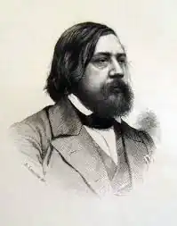

ҐОТЬЄ, Теофіль (Goutier, Theophile — 30.08.1811, м. Тарб — 23.10.1872, Нейї, побл. Парижа) — французький письменник і критик, автор гасла "мистецтво для мистецтва".
Ґотьє народився в 1811 р. на півдні Франції у заможній сім'ї. У 1814 р. сім'я переїхала у Париж. З ним пов'язане формування майбутнього письменника, котрий ще замолоду виявив здібності до малювання і віршування.
Сучасникам він запам'ятався як палкий захисник романтичного мистецтва на прем'єрі новаторської вистави В. Гюго "Ернані" (1830). Боротьбу за романтизм його прихильники тоді виграли. З того часу Ґотьє вважав автора "Собору Паризької Богоматері" другом, а себе — його учнем. Саме захоплення творчістю В. Гюго вплинуло на вибір життєвого шляху дев'ятнадцятирічного юнака, який вирішив присвятити себе літературі. Але романтизм Ґотьє мав свої особливості: він не сприйняв громадянського пафосу свого вчителя. Підкреслений аполітизм — одна з важливих рис його життєвої позиції. З перших кроків на творчому шляху він відстоював свободу мистецтва від законів суспільства. У теоретичних виступах Ґотьє захищав гасло "мистецтво для мистецтва", яке він проголосив у 1835 р. "Прекрасним є тільки те, що нічому не служить", — стверджував він. Естетичні уподобання поета завжди були послідовними. У статті "Про прекрасне в мистецтві" (1856), яка має програмний характер, він підкреслював: "Мистецтво для мистецтва — це творчість, звільнена від усіх прагнень, окрім прагнення досконалості". Творчий доробок письменника налічує велику кількість прозових і поетичних творів, серед яких — романи, новели, есе, статті критичного та теоретичного характеру. Найбільш відомі його романи — "Мадемуазель де Мопен" ("Mademoiselle de Maupin", 1835—1836), "Ельдорадо, або Фортуніо" ("L'Eldorado ou Fortunio", 1838), "Капітан Фракас" ("Le Capitaine Fracasse", 1863) та ін. Роман "Капітан Фракас" письменник задумав ще замолоду (у 1836), але тільки в 60-х приступив до реалізації свого задуму. У цьому творі найповніше виявилося його вміння "живописати" словом, майстерно ліпити людські характери. Головний герой твору, сміливий, шляхетний барон де Сігоньяк, як і його літературний попередник Д'Артаньян, — втілення лицарського служіння дамі серця. У цьому образі знайшов відображення романтичний ідеал автора. У поетичній збірці "Емалі і камеї" ("Emaux et camees", 1852), що складалася з 55 віршів, Ґотьє виявив себе майстром-віртуозом, який, зосереджуючи увагу на кольорі та лінії, уміє передавати напівтони та відтінки. Багато віршів цієї збірки, зокрема "Кармен", стали втіленням естетичних принципів парнасців. Так, звернувшись до образу, добре відомого завдяки новелі П. Меріме ("Кармен", 1845), поет передав своє бачення звабливої циганки. Вона зображена з різних точок зору: ставлення жінок до неї різко негативне, чоловіків — навпаки: Кармен худа, — лице гітаниХтось їй коричневим підвів;І чорні коси, й тіло тьмяне, —Мов сатана у пеклі грів.Жінки вважають, що потвора,Та в чоловіків розум свій.Архієпископ із собора Відправив месу якось їй.(Тут і далі пер. М. Терещенка)Автор намагається пояснити секрет привабливості Кармен, переходить від змалювання ознак зовнішніх ("худа", "смуглява", "чорні коси", "тіло тьмяне") до внутрішніх. Велику роль при цьому відіграють метафоричні епітети ("жагучий і мінливий сміх"), метафори ("полум'я безкрає"). Ліричний сюжет вірша посилюють антитетичні, контрастні характеристики. Переможна сила таємничої привабливості та її секрет підкреслені в останніх двох катренах (чотиривіршах):Усіх красунь перемагаєСмуглява мавританка вмить,І може полум'я безкраєІ пересиченість збудить. її потворність чарівлива —Зернятко солі вод морських,Звідкіль і гола, і вабливаВенера вийшла з хвиль п'янких.Привертає увагу оксиморон: потворність чарівлива. Ця характеристика, як і порівняння Кармен з Венерою, довершує портрет героїні. У вірші спостерігаються властиві парнасцям описовість і живописність. Але при цьому відчувається прагнення автора не тільки створити образ-портрет, а й зрозуміти складний, загадковий характер. Ці спроби є ідейно-тематичною основою твору. Восьмискладовий вірш оригіналу перекладається за допомогою чотиристопного ямба з пірихіями, який найбільше відповідає ритмомелодиці першоджерела.Вірші Ґотьє мають чітку композиційну побудову: кожна строфа містить провідну думку, яка пов'язує її з попередньою строфою. Приклад такого міцного логічного зв'язку спостерігаємо, зокрема, у вірші "Голуби": Біля горба, де звалище камінне,Чарівна пальма підвела чоло,Мов той султан, де птаство голубинеСвоє гніздо на час нічний звило.Та кидають притулок голуб'ятаВ ранковий час, коли у далині. У синім небі мають їх крилята,Немов якісь перлини неземні.Моя душа — це дерево гіллясте,Куди з небес, мов голуби, летитьНадвечір тихий зграйка мрій срібляста,Щоб випурхнуть світанком у блакить. Тут кожна строфа має свої ключові образи: пальма і гніздо на ній (перша), голуб'ята (друга), душа і зграйка мрій (третя). Вірш пов'язують в одне ціле уподібнення ("душа — це дерево") та порівняння ("зграйка мрій — мов голуби"). Важливу роль у композиції вірша відіграють просторово-часові характеристики, між якими теж існує тісний зв'язок. Наприклад, "час нічний" першої строфи і "ранковий час" другої — поєднуються в роздумах автора про душу і мрії у третій, заключній строфі. Поетика Ґотьє не завжди відповідає принципам парнаської школи, оскільки у багатьох творах він залишається типовим романтиком з яскраво вираженою манерою і підкресленим суб'єктивізмом. Прикладом такого твору є вірш "Останнє бажання" — своєрідний гімн коханню, яке не залежить від віку і супроводжує ліричного героя до останнього подиху: Я вас люблю, і я щасливий, —Хоч личить це в сімнадцять літ!Ви в сяйві вся, а я весь сивий,Я — мов зима, ви — пишний цвіт.Уже мої вкривають скроніЦвинтарні лілії сумні,Що скоро у часи безсонні Всю вкриють голову мені.Та якби ви подаруватиЗмогли мені цілунок свій,Тоді я ліг би спочиватиВ труні спокійно в млі нічній!Автор використовує типову романтичну символіку: "Я — мов зима, ви — пишний цвіт". Антитеза "я — ви" є характерною структурною особливістю твору. У вірші "Мистецтво", який належить до програмних, Ґотьє підкреслював: "Минає все — тільки мистецтво творити здатне назавжди". Думку про безсмертну силу мистецтва письменник довів не тільки своїми теоретичними виступами, а й літературною творчістю. Українською мовою окремі вірші Ґотьє переклали П. Грабовський, В. Щурат, М. Рильський, М. Терещенко. О. Ніколенко